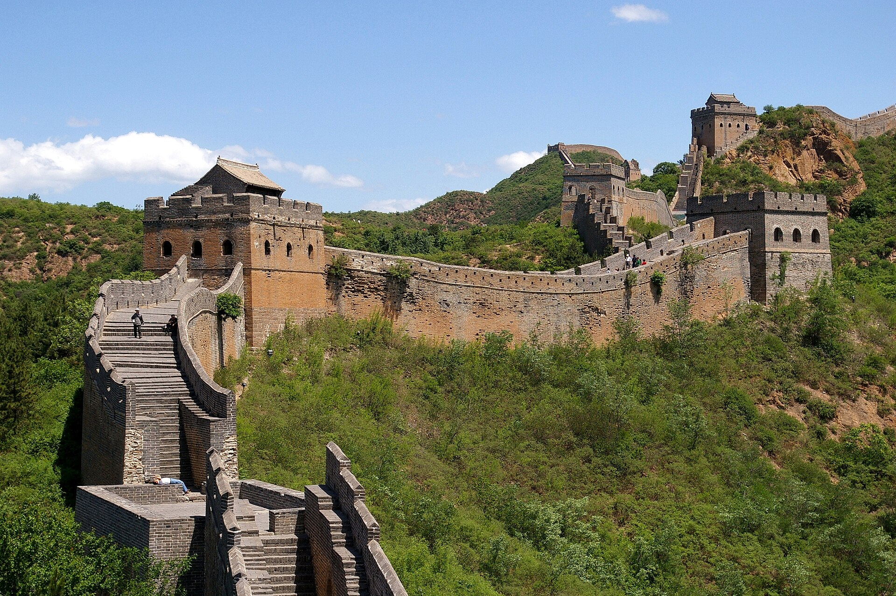
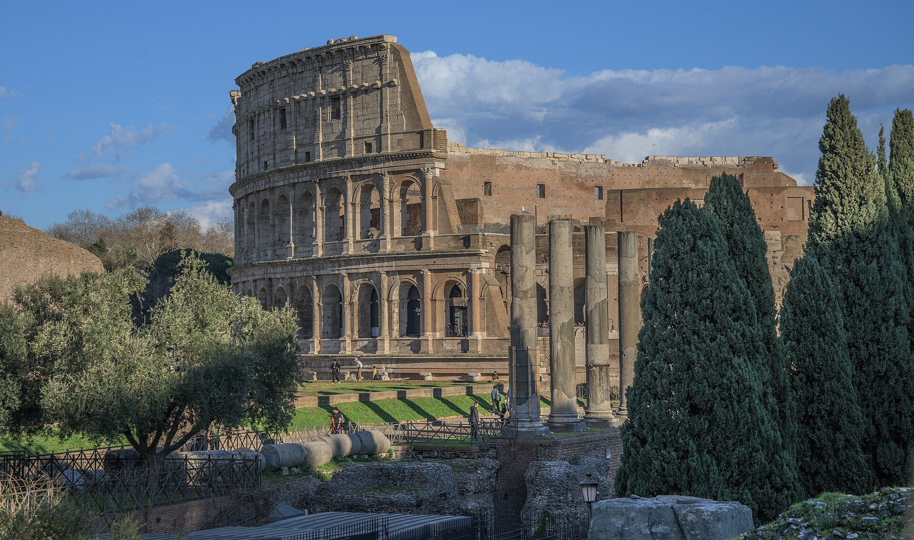
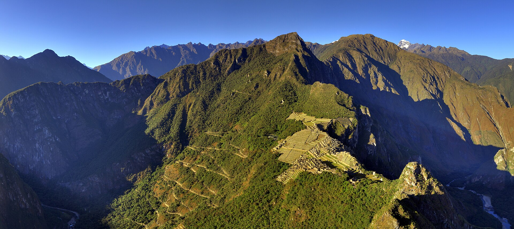
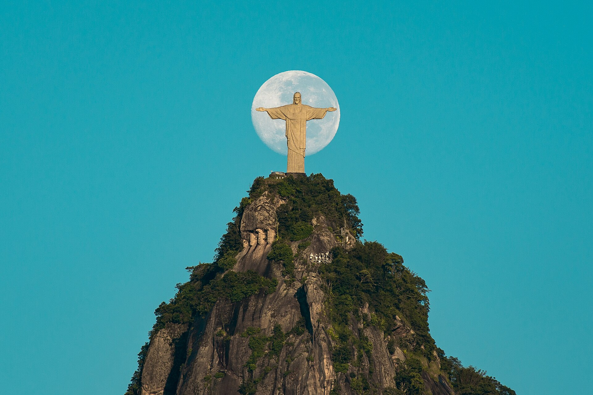

Asia

China
Gran Muralla China
Sistema de fortificaciones construido y ampliado durante distintos períodos de la historia china.
Conocer su historiaPatrimonio y cultura
Un recorrido por construcciones extraordinarias que reflejan el ingenio, las creencias y la identidad de distintas civilizaciones.
Iniciar recorridoLas siete elegidas
Cada monumento conserva una historia vinculada con su época y su cultura.

China
Sistema de fortificaciones construido y ampliado durante distintos períodos de la historia china.
Conocer su historia
Jordania
Ciudad nabatea tallada en piedra y conectada mediante rutas comerciales del mundo antiguo.
Conocer su historia
Italia
Anfiteatro del siglo I que se convirtió en uno de los símbolos más reconocibles del Imperio romano.
Conocer su historia
México
Centro ceremonial maya cuya arquitectura integra conocimientos astronómicos y una compleja vida política.
Conocer su historia
Perú
Ciudad inca construida en los Andes mediante una notable adaptación de la arquitectura al paisaje.
Conocer su historia
India
Mausoleo de mármol blanco que reúne tradiciones arquitectónicas persas, islámicas e indias.
Conocer su historia
Brasil
Monumento art déco levantado sobre el Corcovado y convertido en símbolo cultural de Río de Janeiro.
Conocer su historiaUna selección contemporánea
La lista fue anunciada en 2007 después de una votación internacional. Aunque reúne lugares de épocas y culturas diferentes, todos representan logros arquitectónicos que continúan despertando interés en la actualidad.